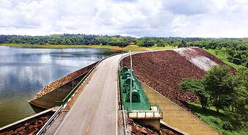

เขื่อนจุฬาภรณ์ ชัยภูมิ

เขื่อนจุฬาภรณ์ (เขื่อนน้ำพรม) ตั้งอยู่ที่ตำบลทุ่งพระ อำเภอคอนสาร สร้างปิดกั้นลำน้ำพรมบนเทือกเขาขุนพาย ลักษณะเขื่อนเป็นเขื่อนหินทิ้ง แกนกลางเป็นดินเหนียว ตัวสันเขื่อนยาว 700 เมตร ความสูงจากฐานราก 70 เมตร เป็นลักษณะเขื่อนเอนกประสงค์ ในความดูแลของการไฟฟ้าฝ่ายผลิตแห่งประเทศไทย (กฟผ.) โดยใช้ประโยชน์ในการผลิตพลังงานไฟฟ้าและ ยังอำนวยประโยชน์ในด้านเกษตรกรรม ในอ่างเก็บน้ำของเขื่อนยังเป็นแหล่งเพาะพันธุ์ปลาน้ำจืดอีกด้วย นอกจากนี้ บริเซรโดยรอบของเขื่อนยังมีแหล่งท่องเที่ยวที่น่าสนใจอีกคือ
พระพุทธสิริสัตตราชจำลอง (หลวงพ่อเจ็ดกษัตริย์) ประดิษฐานที่บริเวณหัวเขื่อนฝั่งซ้าย ตรงข้ามสวนเขื่อนจุฬาภรณ์
สวนเขื่อนจุฬาภรณ์ ตกแต่งเป็นป่าอนุรักษ์ ในพื้นที่ประมาณ 41 ไร่ มีไม้ป่านานาชาติพร้อมศาลาพรมพิสมัยสำหรับนั่งพักผ่อน ทางเดินภายในสวนปูพื้นด้วยหินธรรมชาติ มีพืชโบราณ 325 ล้านปี เป็นพืชตระกูลหญ้ามี 2 สายพันธุ์ คือ สามร้อยยอดและสนหางม้าหรือหญ้าถอดปล้อง